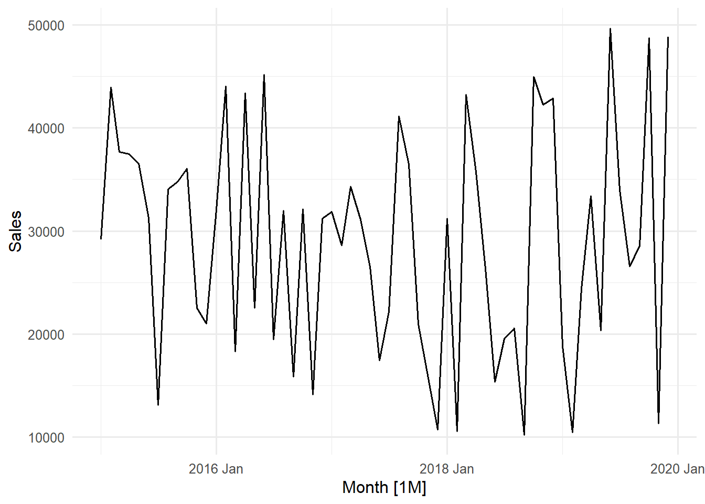
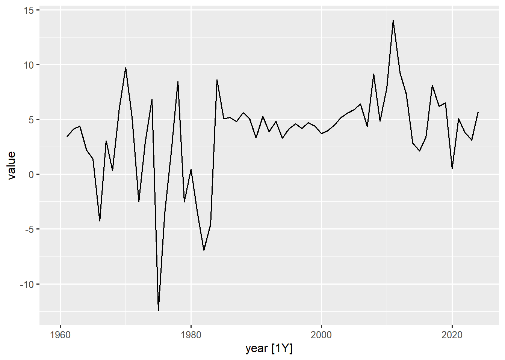
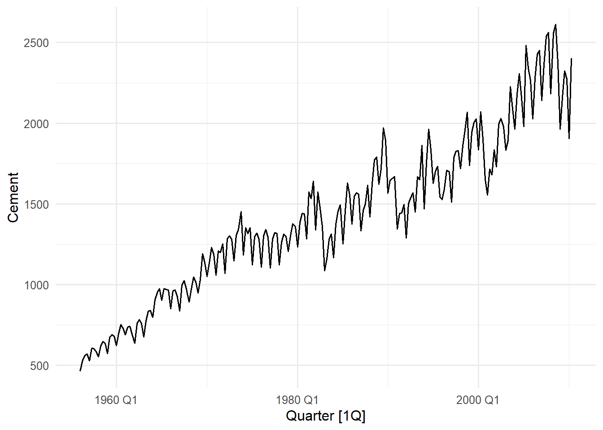
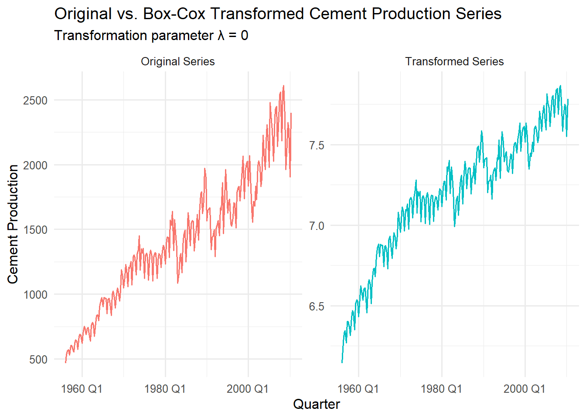
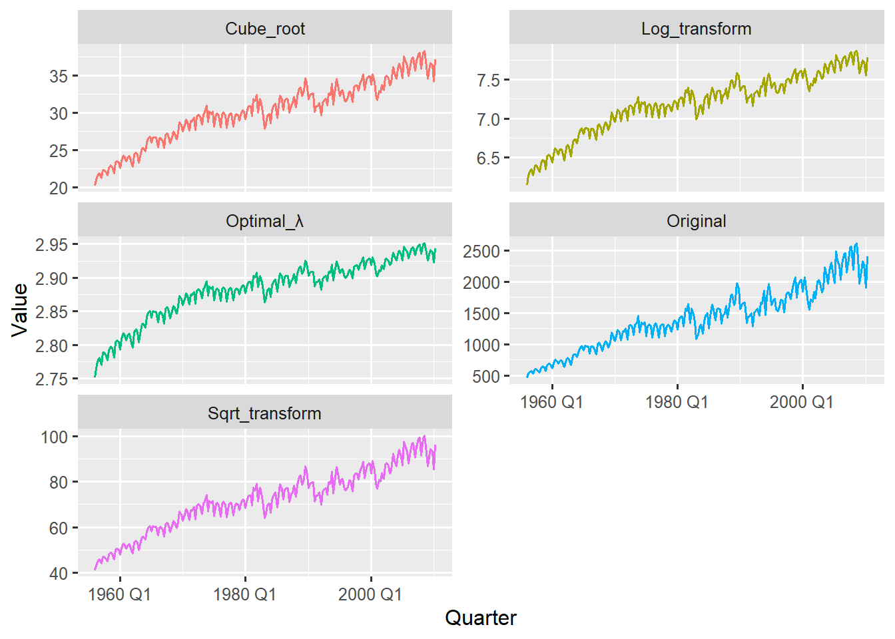
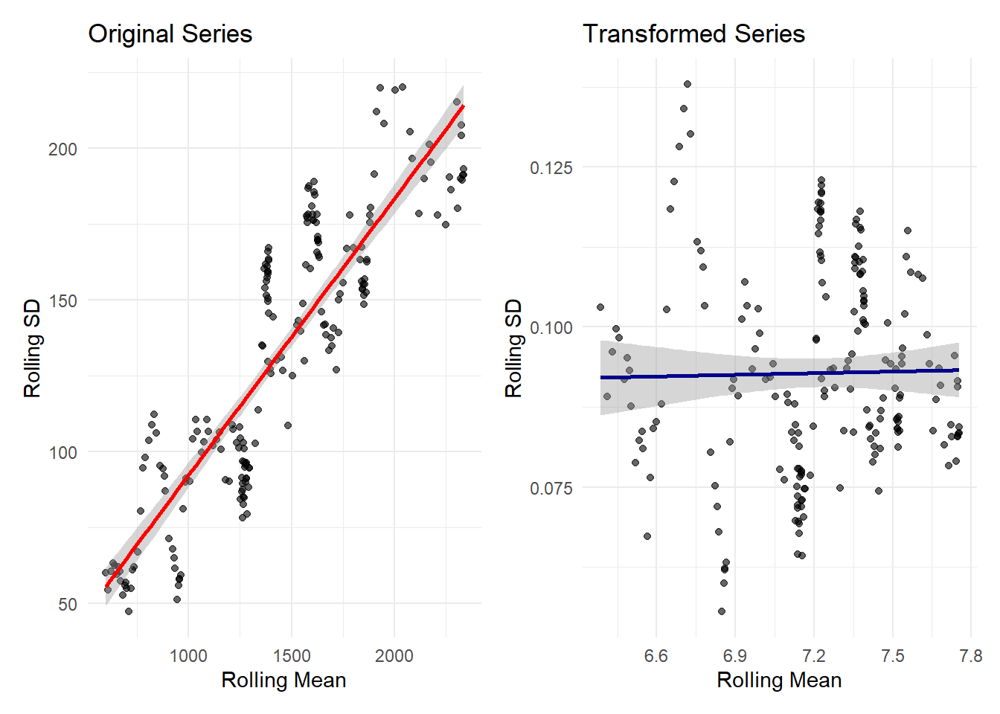

Many time series models operate under the crucial assumption of homoscedasticity–that the variance of the data remains constant over time. However, real world data often violates this assumption, displaying heteroscedasticity where the variability changes with the level of the series. Think of a growing business where seasonal sales swings become larger as the overall sales volume increases, or a temperature variation that become more extreme as climate patterns shift.
When variance is not constant, our models can produce unreliable prediction intervals–they might be too narrow during high variance periods and too wide during low variance periods. Variance stabilisation transforms our data to have more consistent variability throughout, making it better suited for modelling while often helping to normalise the distribution of errors.
11.1 Identifying Heteroscedasticity in Time Series Data
Heteroscedasticity refers to a change in the volatility and spread of a time series over time. Time series models (like ARIMA or ETS) assume that the variance of the forecast errors is constant. If the variance is changing it compromises the accuracy of confidence intervals and predictions.
We will examine the gh_ts and sale_ts data and check for signs of changing variance
11.1.1 Visual Inspection of Variance
The initial step is always to plot the data and visually inspect the magnitude of the fluctuations
# monthly sales datasales_ts|>autoplot(Sales, linewidth =0.7)# Ghana: annual GDP growth rate gh_ts|>filter(indicator_name=="Annual GDP growth rate")|>autoplot(value, linewidth =0.7)

Figure 11.1: Monthly Sales Time Series (2015-2019)

Figure 11.2: Annual GDP Growth Rate Time Series (1960-2024)
The monthly sales plot does not show a clear change in variance across the observed period. The magnitude of the fluctuations (the vertical distance between the seasonal peaks and troughs) remains roughly the same across the entire 5-year period. The values consistently oscillate between approximately \(\text{GH₵}10,000\) and \(\text{GH₵}50,000\) from 2015 through 2019. This implies the series is generally homoscedastic with respect to the mean.
On the other hand The Annual GDP growth rate plot is a classic example of variance change. The fluctuations are much larger and more dramatic in the early period (1960s to early 1980s). During this time, the values frequently swing between +10 and -10. After the mid-1980s, the fluctuations generally reduce and stabilise, mostly staying within the 0 to +10 range. There is a strong indication of variance reduction around the mid 1980s.
11.1.2 Quantitative Check Using the guerrero Feature
While a formal statistical test for heteroscedasticity requires fitting a model and examining the squared residuals, the Guerrero method offers a quick quantitative diagnostic to determine if a transformation is required to achieve homoscedasticity or not. This is a technique to automatically select the optimal parameter (\(\lambda\)) for a Box-Cox transformation. Th feature() function will help us do this.
# calculate optimum lambda value for sales datasales_ts|>features(Sales, guerrero)
# A tibble: 1 × 1
lambda_guerrero
<dbl>
1 0.726
# calculate optimum lambda value for Annual GDP growth rate seriesgh_ts|>filter(indicator_name=="Annual GDP growth rate")|>drop_na()|>features(value, feature =guerrero)
# A tibble: 1 × 2
indicator_name lambda_guerrero
<chr> <dbl>
1 Annual GDP growth rate 1.48
The \(\lambda\) value is interpreted based on its proximity to three key values: 1, 0, or a non-integer value. The lambda value produced for the sale series (0.73) is close to 1 which suggests no transformation. This strongly supports the initial visual inspection which showed that the monthly sales data is largely homoscedastic (stable variance).
The lambda value for the annual GDP growth rate series (1.48, also close to 1) suggests that the variance is not proportional to the mean in a way that requires a a Box-Cox transformation (where \(\lambda\le1\)). This means the variance change observed in the visual inspection is not a simple multiplicative effect. The standard Box-Cox transformation is not sufficient here.
11.2 Applying Box-Cox Transformations
The Box-Cox transformation which we mentioned earlier is a family of power transformations that can stabilise variance across different levels of our time series. The transformation is defined as:
Rather than guessing the optimal \(\lambda\) value, we can use the guerrero() feature as seen earlier from the feasts package to find it automatically.
We have already seen how to do this and also know that the Sales series and the Annual GDP growth rate series do not warrant any type of Box-Cox transformation. We will use the aus_production data to demonstrate how the Box-Cox application works
# Visualise Quarterly Cement production in Australia aus_production|>autoplot(Cement, linewidth =0.7)

Figure 11.3: Quarterly Cement Production in Australia (1956-2010)
The visual inspection shows a clear evidence of unequal variance, specifically increasing variance over time. The series is at a low level in the early periods (1960-1980Q1) and the fluctuations are small relative to the mean (seasonal peaks and troughs closer together).
In the later period (1990 - 2008Q4) the series is at a high level and the fluctuations are visually much larger (the distance between peaks and troughs has increased). This makes the series heteroscedastic because the variance increase as the level (mean production) increases.
This pattern is known as multiplicative variance and is a characteristic of a time series that exhibit growth. We will now calculate the optimal lambda needed for a Box-Cox transformation for this series.
# calculate and extract optimal lambda using the guerrero methodoptimal_lambda<-aus_production|>features(Cement, features =guerrero)|>pull(lambda_guerrero)
The optimal lambda value calcuated is \(-0.309022\) (close to 0) which clearly suggests a transformation is required and confirms our visual inspection. In practice you would typically use a log transformation \((\lambda=0)\) for such values (closer to zero) rather than the exact \(\lambda=-0.309022\). This is because a log transformation is simpler and more interpretable which performs similarly to nearby lambda values (in which our optimal_lambda falls squarely in that range). Now let us transform and compare the results
# Apply Box-Cox transformation with optimal lambdatransformed_aus_cement<-aus_production|>select(Quarter, Cement)|>mutate(trans_Cement =box_cox(Cement, lambda =round(optimal_lambda)))# Visualise original vs transformed seriestransformed_aus_cement|>pivot_longer( cols =-Quarter, names_to ='Version', values_to ='Sales_value')|>autoplot(Sales_value, linewidth =0.7, show.legend =FALSE)+facet_wrap(vars(Version), scales ='free_y', labeller =labeller(Version =c('Cement'='Original Series', 'trans_Cement'="Transformed Series")))+labs(title ="Original vs. Box-Cox Transformed Cement Production Series", subtitle =paste("Transformation parameter λ =", round(optimal_lambda)), y ='Cement Production', x ="Quarter")

Figure 11.4: Visually Comparing the Original Cement Series with The Log Transformed Series
The transformation is applied using the box_cox() function from the fabletools package. It takes the raw Cement values and applies the Box-Cox formula using the provided lambda. We round lambda to the nearest whole number (0) to get a log transformation.
Comparing the original and transformed series you can clearly see how the fluctuations look similar throughout the entire period for the transformed series, whiles still showing the upward trend from the original series (preserves trend direction).
The peaks and troughs for all quarters seems to have similar amplitudes throughout the years. Also notice how the y-axis scale changed from ~500 - 2500 in the original series to ~6.5 - 7.5 (log scale) in the transformed series giving it a much more constant variance over time. The transformed series is now suitable for ARIMA or ETS modelling as the constant amplitude of fluctuations satisfies the constant variance assumption.
Note
Rounding the exact \(\lambda\) to a simpler, nearby value (like 0 for a log transformation) is a common, pragmatic step for better interpretability. After forecasting we can back-transform to original scale: exp(log_forecast)
11.3 Interpreting Transformation Parameters and Assessing Effectiveness
11.3.1 Interpreting Transformation Parameters
The Box-Cox transformation is governed by the parameter \(\lambda\) (lambda), which dictates the power applied to the data. Different lambda values correspond to different transformations. Understanding the relationship between lambda and the resulting transformation is key to time series data preparation.
lambda \((\lambda)\) value
Recommended Transformation
Variance Implication
\(\lambda=1\)
No Transformation \((Y_{t})\)
Series is already Homoskedastic
\(\lambda\ \text{close to 1}\)(e.g., 0.7 to 1.3)
Transformation provides minimal benefit
Variance is largely stable
\(\lambda=0.5\)
Square Root \((\sqrt{Y_{t}})\)
Moderate stabilisation required
\(\lambda=0\)
Natural Logarithm \((\log(Y_{t}))\)
Variance is proportional to the level (Multiplicative variance)
\(\lambda=-1\)
Inverse \((1/Y_{t})\)
Severe stabilisation required; common when variance decreases as the mean decreases
We demonstrate how different lambda values visually impact the cement production data with the code below.
# apply and compare multiple common lambda values for demonstrationcomparison_data<-aus_production|>select(Quarter, Original =Cement)|>mutate( Log_transform =box_cox(Original, lambda =0), # Natural log Sqrt_transform =box_cox(Original, lambda =0.5), # Square root Cube_root =box_cox(Original, lambda =1/3), # Cube root Optimal_λ =box_cox(Original, lambda =optimal_lambda))# plot all transformations for comparisoncomparison_data|>pivot_longer( cols =-Quarter, names_to ="Transformations", values_to ="Value")|>ggplot(aes(x=Quarter, y=Value, colour =Transformations))+geom_line(linewidth =0.7)+facet_wrap(~Transformations, scales ="free_y", ncol =2)+theme(legend.position ="none")

Figure 11.5: Comparing Different Box-Cox Transformations with their Original Series Visually
The comparative plot confirms that transformations with lambda values near zero (Log, Cube Root, and Optimal λ) produce visually similar variance-stabilised series, while the Square Root transform \((\lambda=0.5)\) slightly undershoots the required stabilisation. Notice how each series has varying y-scale due to the type of transformation applied.
Tip
For log transformations use log1p() if your series data contains zeros
11.3.2 Assessing Transformation Effectiveness
Although visual inspections provide insightful patterns and trends, we can statistically verify that the transformation successfully made the variance independent of the mean. This is done by examining the relationship between the rolling mean (level) and the rolling standard deviation (volatility)
library(slider)# for roling mean and standard deviationlibrary(patchwork)# for plot layout# Calculate rolling mean and variancevariance_mean_relationship<-transformed_aus_cement|>as_tibble()|>mutate(# Original series orig_mean =slide_dbl(Cement, mean, .before =16, .complete =TRUE), orig_sd =slide_dbl(Cement, sd, .before =16, .complete =TRUE),# Transformed series trans_mean =slide_dbl(trans_Cement, mean, .before =16, .complete =TRUE), trans_sd =slide_dbl(trans_Cement, sd, .before =16, .complete =TRUE))|>filter(!is.na(orig_mean))# Plot variance-mean relationshipp1<-variance_mean_relationship|>ggplot(aes(x =orig_mean, y =orig_sd))+geom_point(alpha =0.6)+geom_smooth(method ="lm", se =TRUE, color ="red")+labs( title ="Original Series", x ="Rolling Mean", y ="Rolling SD")+theme_minimal()p2<-variance_mean_relationship|>ggplot(aes(x =trans_mean, y =trans_sd))+geom_point(alpha =0.6)+geom_smooth(method ="lm", se =TRUE, color ="darkblue")+labs( title ="Transformed Series", x ="Rolling Mean", y ="Rolling SD")+theme_minimal()p1+p2

Figure 11.6: Mean-Variance Relationship For Original Series and Transformed Series
The code above uses the slide_dbl function from the slider package to calculate the rolling standard deviation over a 17-quarter window (.before = 16)
The Left plot (Original Series) shows a clear linear relationship between its rolling mean and rolling standard deviation (SD). This is a clear heteroscedasticity where variance grows with the series’ level, which further confirms that the original series has a variance proportional to the mean. The nearly flat blue line in the left plot indicates how the transformation has now stabilised the variance across all levels. The rolling SD stays relatively constant (~0.07 to ~0.125) regardless of the rolling mean.
Picking a rolling window that captures the full business cycle is very essential for a stable estimation while still remaining sensitive to local patterns. With quarterly data, 17 quarters or ~4 years (rolling window) is a good compromise between smoothness and responsiveness. We could also quantify this relationship with correlations
# correlation for original series and transformed series cor_original<-cor(variance_mean_relationship$orig_mean,variance_mean_relationship$orig_sd)cor_transformed<-cor(variance_mean_relationship$trans_mean,variance_mean_relationship$trans_sd)
Original Series correlation (mean vs SD): 0.883
Transformed series correlation (mean vs SD: 0.018
This is the most objective evidence for assessing the transformations effectiveness. The strong positive correlation (88.3%) in the original series confirms heteroscedasticity (volatility depends on the level). The near zero correlation (1.8%) in the transformed data provides conclusive statistical evidence that the Box-Cox transformation was highly effective and has properly prepared the Cement Production time series for subsequent time series modelling.
The optimal transformation often represents a balance between variance stabilization and interpretability. While mathematical optimization helps, domain knowledge should guide final decisions, for example, log-transformed sales data can be interpreted in terms of percentage changes, which may be more meaningful for business stakeholders.
11.4 Summary
We have tackled a fundamental challenge in time series forecasting; dealing with changing variances over time. We learned that many forecasting models assume constant variance, but real world data often displays a changing variance, where variability decreases or increases with the series level.
The key insight emerged that variance stabilisation is not just a mathematical exercise, it is about creating a series where forecasting models can learn consistent patterns rather than being misled by changing variability.
In our next chapter we will look at another critical assumption of time series modelling - stationarity. We will explore what it means for a data to be stationary tests to confirm it and techniques to transform our series into a stationary one.
Allaire, JJ, Yihui Xie, Christophe Dervieux, Jonathan McPherson, Javier Luraschi, Kevin Ushey, Aron Atkins, et al. 2024. rmarkdown: Dynamic Documents for r. https://github.com/rstudio/rmarkdown.
Frick, Hannah, Fanny Chow, Max Kuhn, Michael Mahoney, Julia Silge, and Hadley Wickham. 2025. rsample: General Resampling Infrastructure. https://doi.org/10.32614/CRAN.package.rsample.
O’Hara-Wild, Mitchell, Cynthia A. Huang, Matthew Kay, and Rob Hyndman. 2025. ggtime: Grammar of Graphics and Plot Helpers for Time Series Visualization. https://doi.org/10.32614/CRAN.package.ggtime.
R Core Team. 2025. R: A Language and Environment for Statistical Computing. Vienna, Austria: R Foundation for Statistical Computing. https://www.R-project.org/.
Wang, Earo, Dianne Cook, and Rob J Hyndman. 2020. “A New Tidy Data Structure to Support Exploration and Modeling of Temporal Data.”Journal of Computational and Graphical Statistics 29 (3): 466–78. https://doi.org/10.1080/10618600.2019.1695624.
Wickham, Hadley, Mara Averick, Jennifer Bryan, Winston Chang, Lucy D’Agostino McGowan, Romain François, Garrett Grolemund, et al. 2019. “Welcome to the tidyverse.”Journal of Open Source Software 4 (43): 1686. https://doi.org/10.21105/joss.01686.
Xie, Yihui. 2014. “knitr: A Comprehensive Tool for Reproducible Research in R.” In Implementing Reproducible Computational Research, edited by Victoria Stodden, Friedrich Leisch, and Roger D. Peng. Chapman; Hall/CRC.
———. 2015. Dynamic Documents with R and Knitr. 2nd ed. Boca Raton, Florida: Chapman; Hall/CRC. https://yihui.org/knitr/.
———. 2025. knitr: A General-Purpose Package for Dynamic Report Generation in R. https://yihui.org/knitr/.
Xie, Yihui, J. J. Allaire, and Garrett Grolemund. 2018. R Markdown: The Definitive Guide. Boca Raton, Florida: Chapman; Hall/CRC. https://bookdown.org/yihui/rmarkdown.